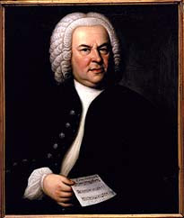

Classical Music is an amazing genre of music, typically referring to music from the Western World. It stands out from most
other genres of music through its complexity in its form, both in the melody and the harmony. Although this form of music started
as early as 500 AD, most musicians consider Classical Music to have begun somewhere in the 11th century and gain its admired form
starting in the 16th century with the beginning of the Baroque period, one of the great periods, still played consistenly to this day.
Periods of Classical Music:
Medieval Period: 500 - 1400
Renaissance Period: 1400 - 1600
Baroque Period: 1600 - 1750
Classical Period: 1750 - 1820
Romantic Period: 1820 - 1900
20th Century Period: 1900 - 1980
Contemporary Period: 1980 - Present
Classical Composers
In Classical Music, the composers are the ones who create the pieces(not songs) for the musicians to play. They are usually
incredibly talented people, who often know how to play multiple instruments. Alongside the period they were part in, the composers
are also sometimes categorized by their country or region of origin, which often greatly influenced their musical style, with many
composers, most notably Antonin Dvorak
using traditional and folklore themes in their music.

Johann Sebastian Bach - one of the greatest composers of all time
Composer
Period
Region
Wolfgang Amadeus Mozart
Classical
Austria
Ludwig van Beethoven
Romantic
Germany
Maurice Ravel
20th Century
France
Pyotr Ilich Tchaikovsky
Romantic
Russia
Antonio Vivaldi
Baroque
Italy
Beethoven Symphony No. 9
The Symphony No. 9 in D minor, Op. 125, is a choral symphony, the final complete symphony by Ludwig van Beethoven,
composed between 1822 and 1824. It was first performed in Vienna on 7 May 1824. The symphony is regarded by many critics and musicologists
as a masterpiece of Western classical music and one of the supreme achievements in the history of music. One of the best-known works
in common practice music, it stands as one of the most frequently performed symphonies in the world.
The final (4th) movement of the symphony, commonly known as the Ode to Joy, features four vocal soloists and a chorus in the parallel
key of D major. The text was adapted from the "An die Freude (Ode to Joy)", a poem written by Friedrich Schiller in 1785 and revised
in 1803, with additional text written by Beethoven. In the 20th century, an instrumental arrangement of the chorus was adopted
by the Council of Europe, and later the European Union, as the Anthem of Europe.
Paganini Violin Concerto
Composed by legendary violinist Niccolo Paganini, this is the cadenza of his first Violin Concerto, played by amazing, talented, young
violinist Chloe Chua from Singapore with the Singapore Symphony Orchestra.